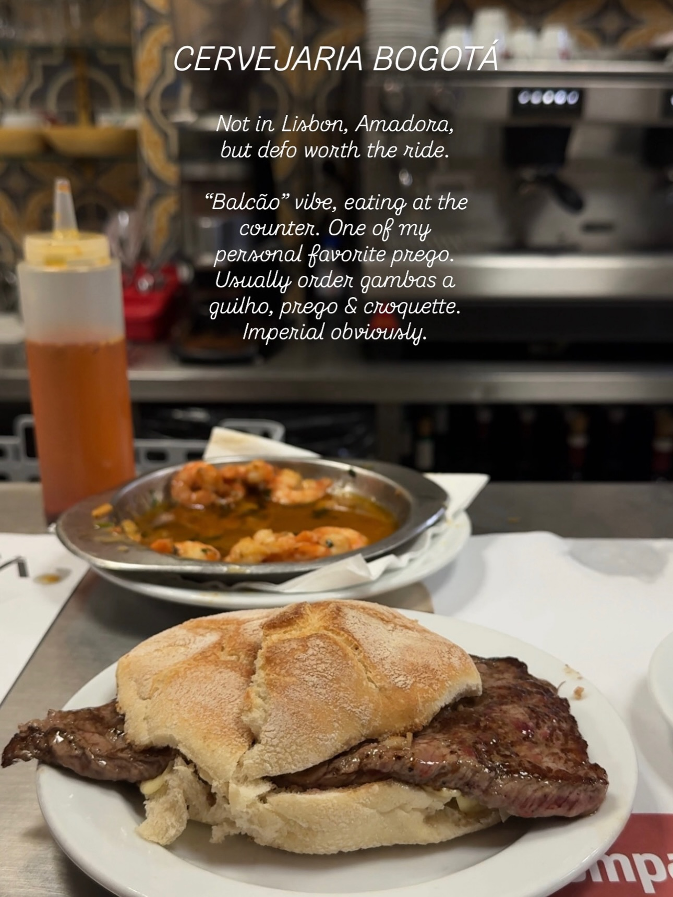
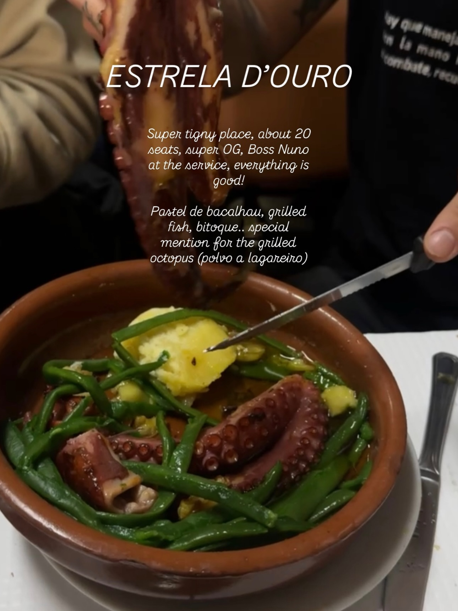
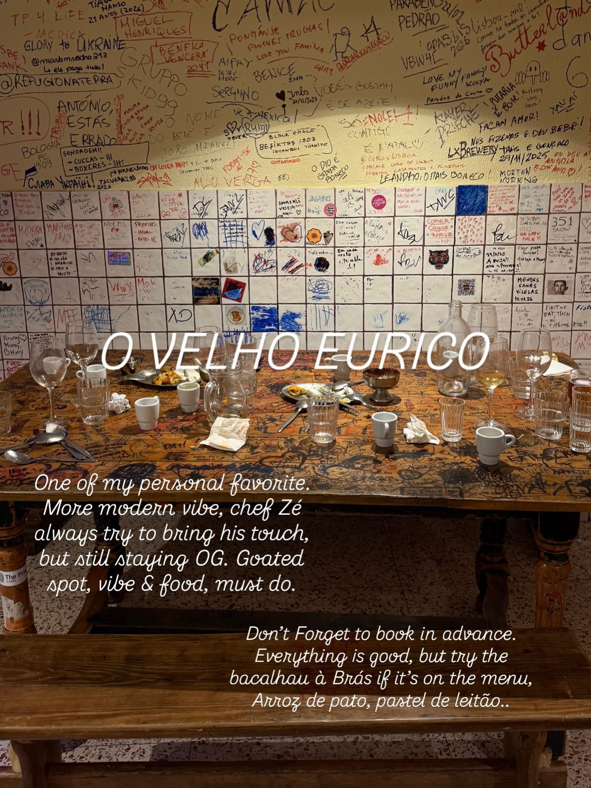
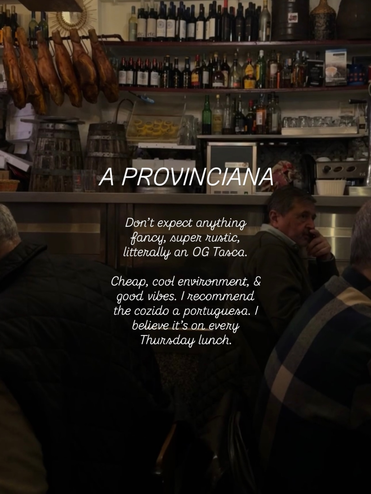
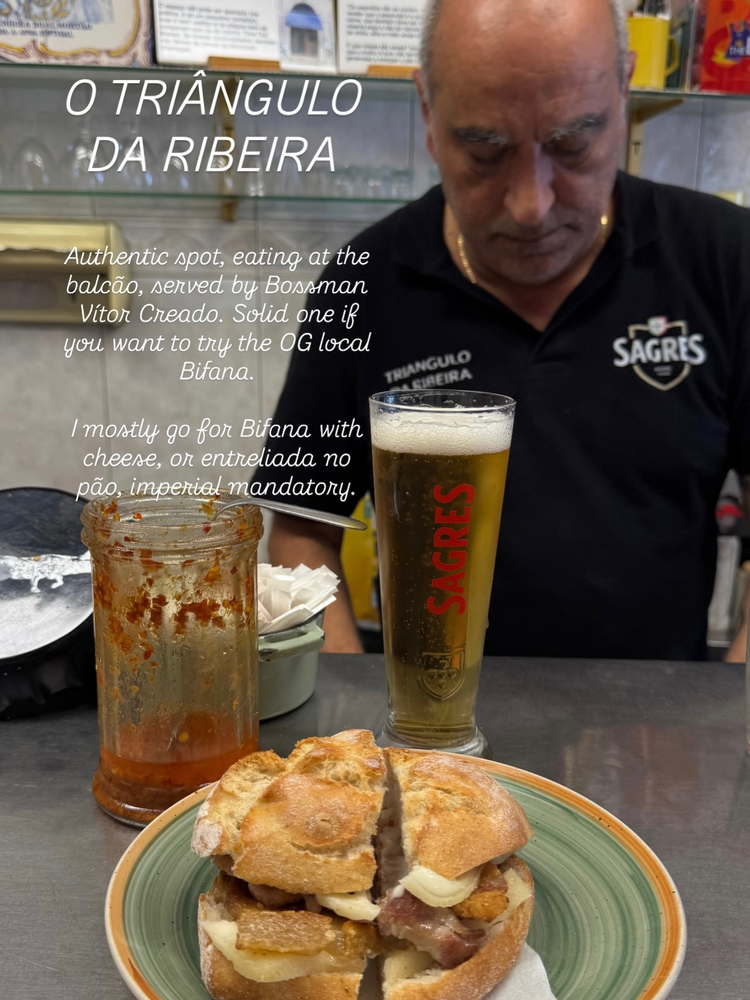
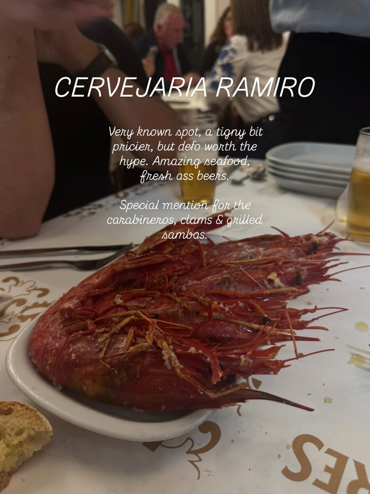
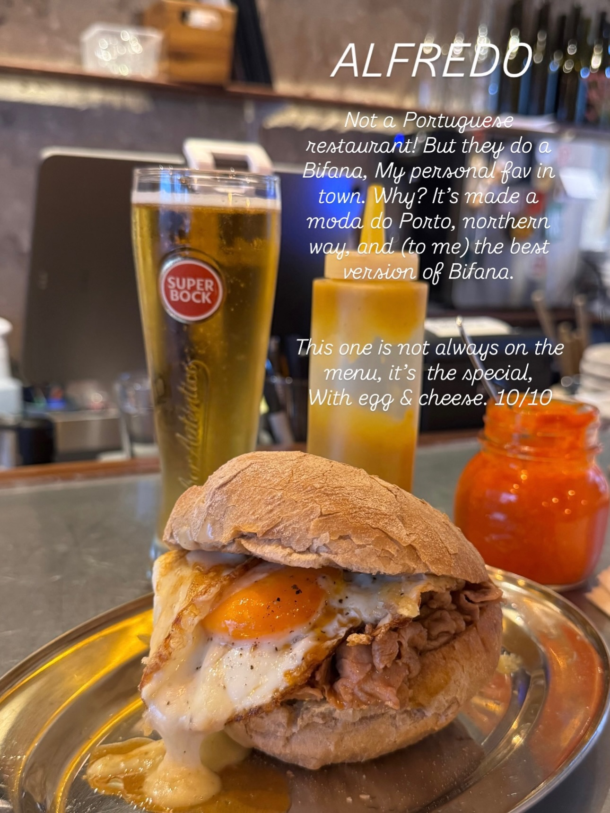

Instagram Post

Some Portuguese food recs 🫒
carousel (10 slides) (enriched by ClaudeClaw)
Summary
restaurants i go to when i crave OG Portuguese food | CERVEJARIA BOGOTÁ Not in Lisbon, Amadora, but defo worth ... | ESTRELA D'OURO Super tigny place, about 20 seats, super O... | TP 4 LIFE 27 ANOS (2024) MIGUEL HENRIQUES CAMAC PARABENS ... | GALETO The perfect sport for a late snack, closes at 3 AM... | The interior of a rustic bar or restaurant features hangi... | O TRIÂNGULO DA RIBEIRA Authe...
Caption
Some Portuguese food recs 🫒
Lisbon & around
Feel free to drop your favorite ones in the comments so others can check them out !
#lisbon #portugal #tasca #cervejaria #wheretoea
1
restaurants i go to when i crave OG Portuguese food
A person with a mustache sits at an orange table, holding a glass of red wine, leaning against a tiled wall with illustrations, at an outdoor restaurant at night.
2
CERVEJARIA BOGOTÁ Not in Lisbon, Amadora, but defo worth the ride. “Balcão” vibe, eating at the counter. One of my personal favorite prego. Usually order gambas a guilho, prego & croquette. Imperial obviously.
A close-up shot of a steak sandwich on a white plate in the foreground, with a metal dish of shrimp in sauce and a squeeze bottle visible on a counter in the background.
3
ESTRELA D'OURO Super tigny place, about 20 seats, super OG, Boss Nuno at the service, everything is good! Pastel de bacalhau, grilled fish, bitoque.. special mention for the grilled octopus (polvo a lagareiro)
A close-up shot shows a clay bowl filled with grilled octopus, green beans, and potatoes, with a hand holding a knife cutting into a potato, set on a table.
4
TP 4 LIFE 27 ANOS (2024) MIGUEL HENRIQUES CAMAC PARABENS 22/02/2024
5
GALETO The perfect sport for a late snack, closes at 3 AM, after a long night having drinks, this place can save you Simple stuff, mostly Portuguese cuisine. I usually go for the canja, croquettes & prego.
Three sandwiches or burgers on white plates are displayed on a stainless steel counter under a copper heat lamp in what appears to be a commercial kitchen setting.
6
A PROVINCIANA Don't expect anything fancy, super rustic, literally an OG Tasca. Cheap, cool environment, & good vibes. I recommend the cozido a portuguesa. I believe it's on every Thursday lunch.
The interior of a rustic bar or restaurant features hanging cured hams, shelves stocked with bottles behind a counter, and two men partially visible in the foreground.
7
O TRIÂNGULO DA RIBEIRA Authentic spot, eating at the balcão, served by Bossman Vítor Creado. Solid one if you want to try the OG local Bifana. I mostly go for Bifana with cheese, or entreliada no pão, imperial mandatory. TRIANGULO DA RIBEIRA SAGRES SAGRES
A close-up shot shows a sandwich on a plate, a glass of Sagres beer, and a jar of chili sauce on a counter, with a man in a black shirt visible in the background.
8
CERVEJARIA RAMIRO Very known spot, a tigny bit pricier, but defo worth the hype. Amazing seafood, fresh ass beers. Special mention for the carabineros, clams & grilled sambas.
A close-up shot shows a plate of large, red cooked prawns on a white tablecloth in a restaurant setting, with blurred diners and drinks in the background.
9
ALFREDO Not a Portuguese restaurant! But they do a Bifana, My personal fav in town. Why? It's made a moda do Porto, northern way, and (to me) the best version of Bifana. SUPER BOCK This one is not always on the menu, it's the special, With egg & cheese. 10/10
A close-up shot shows a sandwich with meat, a fried egg, and melted cheese on a metal plate, with a glass of beer and condiments in the background on a counter.
10
VIDA DE TASCA VIDA DE TASCA Very authentic, good vibes, good people, good food.
The exterior of a small restaurant or bar with outdoor seating on a cobblestone sidewalk.
All slides





